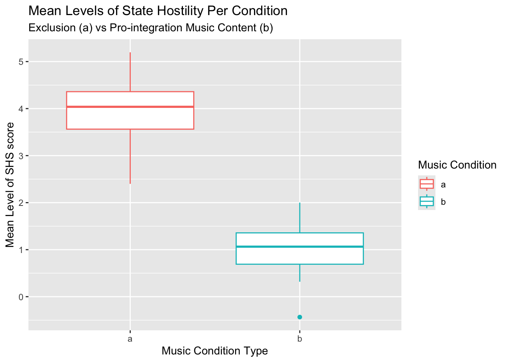

This portfolio piece will focus on my research paper titled “Priming Effects: Musical Context Influences on Prosocial Behavior”. I created my own research study that includes procedures and methods, but I did not carry out this theoretical experiment. However, I would like to create a hypothetical visualization that encapsulates my expected results. The final result from this portfolio piece will be a visualization that is in line with my hypothesis.
First I will install the tidyverse package in order to compete my visualization.
library(tidyverse)## ── Attaching core tidyverse packages ──────────────────────── tidyverse 2.0.0 ──
## ✔ dplyr 1.1.4 ✔ readr 2.1.6
## ✔ forcats 1.0.1 ✔ stringr 1.6.0
## ✔ ggplot2 4.0.1 ✔ tibble 3.3.1
## ✔ lubridate 1.9.4 ✔ tidyr 1.3.2
## ✔ purrr 1.2.1
## ── Conflicts ────────────────────────────────────────── tidyverse_conflicts() ──
## ✖ dplyr::filter() masks stats::filter()
## ✖ dplyr::lag() masks stats::lag()
## ℹ Use the conflicted package (<http://conflicted.r-lib.org/>) to force all conflicts to become errorsMy study is focused on how music has the power to implicitly prime groups to be more hostile. The procedure includes the experimental condition with two groups: a group who will listen to music with themes of exclusion, while the other listens to music with themes of pro-integration. Then, participants fill out the State Hostility Scale (SHS) after doing a unrelated distraction task. I am expecting that this direct manipulation of music will contribute to changes in the mean states of hostility.
My first hypothesis states that the exclusion music condition will have a higher mean level SHS score than the mean level SHS score for participants in the pro-integration music condition.
For my visualization there will be a couple of variables to look at. The first being the mean level of SHS scores on the y-axis, and the experimental condition (exclusion/pro-integration) on the x-axis. So far, I think a box plot would be the best plan in creating a clear visualization. The SHS scale is from 0-5; hence, I want to visualize the mean of the exclusion group to be greater than the pro-integration group.
First, I will create a fake data set with two groups with different means. The number of my participants in my hypothetical study is 200, and setting the standard deviation to .5 allows the scale of 0-5 to be realistically set, and never fall below zero.
df <- data.frame(group = rep(letters[1:2], each = 1),
MeanSHSscore = rnorm(n = 200, mean = c(4, 1), sd = .5)
)
df## group MeanSHSscore
## 1 a 3.3887903
## 2 b 0.9033376
## 3 a 4.0833905
## 4 b 0.8146892
## 5 a 4.0909497
## 6 b 1.7511307
## 7 a 4.4062344
## 8 b 1.2253093
## 9 a 3.8136760
## 10 b 0.4125516
## 11 a 3.4923010
## 12 b 1.3141903
## 13 a 3.2818559
## 14 b 0.8586052
## 15 a 4.2430557
## 16 b 0.5975437
## 17 a 3.0183030
## 18 b 1.0123696
## 19 a 4.2083577
## 20 b 1.0224203
## 21 a 4.3120741
## 22 b 1.3919707
## 23 a 4.2217149
## 24 b 1.6117970
## 25 a 3.2747113
## 26 b 1.4020912
## 27 a 3.2085187
## 28 b 1.2638588
## 29 a 3.6194962
## 30 b 1.3355267
## 31 a 3.7837468
## 32 b 1.6827779
## 33 a 4.3729571
## 34 b 1.2578544
## 35 a 3.6516562
## 36 b 1.4508156
## 37 a 2.8926364
## 38 b 0.6652460
## 39 a 4.4759487
## 40 b 1.1054016
## 41 a 4.3419521
## 42 b 0.9300434
## 43 a 4.5162026
## 44 b 0.9141550
## 45 a 4.1662186
## 46 b 1.4390108
## 47 a 4.1392308
## 48 b 0.6931872
## 49 a 3.8941847
## 50 b 1.7920807
## 51 a 4.1087823
## 52 b 1.3183699
## 53 a 3.2764744
## 54 b 1.4046584
## 55 a 3.4810718
## 56 b 0.4942153
## 57 a 4.2922947
## 58 b 0.5163281
## 59 a 3.6978373
## 60 b 0.6738084
## 61 a 4.6039333
## 62 b 0.3184075
## 63 a 3.0800089
## 64 b 0.7543601
## 65 a 3.0003434
## 66 b 0.7744731
## 67 a 4.2075755
## 68 b 1.2480438
## 69 a 3.2166795
## 70 b 0.6897039
## 71 a 4.7325389
## 72 b 1.2393947
## 73 a 3.9040947
## 74 b 0.9417433
## 75 a 4.1451427
## 76 b 1.4272428
## 77 a 3.7394794
## 78 b 1.1352520
## 79 a 3.9517333
## 80 b 0.7504551
## 81 a 4.4031358
## 82 b 1.3884348
## 83 a 3.8702476
## 84 b 1.0154918
## 85 a 3.4616126
## 86 b 0.5267611
## 87 a 3.8331843
## 88 b 0.5148426
## 89 a 3.9713440
## 90 b 0.4455778
## 91 a 4.5739049
## 92 b -0.4339209
## 93 a 3.9767880
## 94 b 0.9697463
## 95 a 3.9337792
## 96 b 1.2963694
## 97 a 3.9593941
## 98 b 1.1248517
## 99 a 3.5359337
## 100 b 1.1118286
## 101 a 4.2334834
## 102 b 1.1274145
## 103 a 3.9261100
## 104 b 0.8279209
## 105 a 3.5766439
## 106 b 0.6112235
## 107 a 4.1979395
## 108 b 1.7714999
## 109 a 4.1305812
## 110 b 1.3551166
## 111 a 3.7334788
## 112 b 1.1155366
## 113 a 4.6635775
## 114 b 1.1068165
## 115 a 3.4818206
## 116 b 1.5765432
## 117 a 4.9132443
## 118 b 0.7051636
## 119 a 2.4001585
## 120 b 1.3634132
## 121 a 4.0550015
## 122 b 0.4383936
## 123 a 4.7572277
## 124 b 1.0171286
## 125 a 4.0214336
## 126 b 0.7560705
## 127 a 3.3306896
## 128 b 1.6101662
## 129 a 4.5992674
## 130 b 1.2406557
## 131 a 4.7509113
## 132 b 1.3881113
## 133 a 4.0770518
## 134 b 1.1355649
## 135 a 3.6050986
## 136 b 0.5564143
## 137 a 4.0174590
## 138 b 2.0009811
## 139 a 4.3497998
## 140 b 0.8901600
## 141 a 4.3800432
## 142 b 0.8381299
## 143 a 4.1654404
## 144 b 0.3705133
## 145 a 4.5634418
## 146 b 0.5049437
## 147 a 4.6000931
## 148 b 1.3272292
## 149 a 4.1988176
## 150 b 1.4092919
## 151 a 4.4604444
## 152 b 0.3424565
## 153 a 3.7143281
## 154 b 1.7102575
## 155 a 4.2117142
## 156 b 1.8827442
## 157 a 4.5567309
## 158 b 0.5905373
## 159 a 3.5145445
## 160 b 0.5000149
## 161 a 4.5089011
## 162 b 0.6910332
## 163 a 4.8150304
## 164 b 0.9802458
## 165 a 4.2643848
## 166 b 0.5688260
## 167 a 3.4678778
## 168 b 0.6611873
## 169 a 3.5073832
## 170 b 1.6608262
## 171 a 5.1970364
## 172 b 1.1770711
## 173 a 4.6359345
## 174 b 1.1818320
## 175 a 3.5615803
## 176 b 0.4944538
## 177 a 3.2631326
## 178 b 1.0124629
## 179 a 3.8597921
## 180 b 0.8114531
## 181 a 4.3958581
## 182 b 1.2125416
## 183 a 3.2503602
## 184 b 1.7893692
## 185 a 4.3682638
## 186 b 1.3375784
## 187 a 3.1246822
## 188 b 1.4752023
## 189 a 4.3573538
## 190 b 1.4357639
## 191 a 3.4468504
## 192 b 1.1194158
## 193 a 4.1355792
## 194 b 0.7727351
## 195 a 3.5638064
## 196 b 0.5154267
## 197 a 3.6688895
## 198 b 1.6340999
## 199 a 4.7473575
## 200 b 0.5068756This new data frame yields two groups. Group A will be the exclusion condition (higher mean level of state hostility), followed by Group B, the pro-integration (lower mean level of state hostility).
df %>% ggplot(aes(x = group, y = MeanSHSscore, color = group)) + geom_boxplot() + labs(title = "Mean Levels of State Hostility Per Condition", subtitle = "Exclusion (a) vs Pro-integration Music Content (b)", x = "Music Condition Type", y = "Mean Level of SHS score", color = "Music Condition")
This visualization accurately depicts that I wanted. I am differentiating between two conditions, exclusion and pro-integration based on groups a and b. I was able to successfully achieve this goal by creating a fake data frame with my specified number of observations, two groups, and a set scale. After using a box plot and labs() function to add clarity, I am very satisfied in this visualization for my expected results.